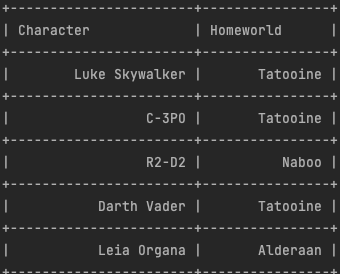

Let our tests talk to us!
Kotlin edition
The disclaimer
What does 'Let our tests talk to us!' mean?
- Test names have a concise structure (e.g. [methodname] should ...)
- Test names show expected behaviour
- Test methods have a concise structure, e.g.
- Arrange, act ,assert
- Given, when, then
- Failing tests have a descriptive explanation
The sample app
A simple Almanach for
The features
| Almanach().fetchCharacters() | Almanach().fetchPlanets() |
|  |
The architecture
Which test output do you like more?
 |
|
Plain JUnit
internal class AlmanachTestV0 {
@Test
fun `fetchCharacters should return empty list if web client returns no characters`()
@Test
fun `fetchCharacters should associate character and planet if web client returns character and its homeworld`()
@Test
fun `fetchPlanets should return empty list if web client returns no planets`()
@Test
fun `fetchPlanets should associate planet and character if web client returns planet and its inhabitant`()
}
Usage of @DisplayName, @Nested & inner class
@DisplayName("Almanach")
internal class AlmanachTestV1 {
@Nested
inner class FetchCharacters {
@Test
fun `should return empty list if web client returns no characters`()
@Test
fun `should associate character and planet if web client returns character and its homeworld`()
}
@Nested
inner class FetchPlanets {
@Test
fun `should return empty list if web client returns no planets`()
@Test
fun `should associate planet and character if web client returns planet and its inhabitant`()
}
}
Which test output do you like more?
|
|
Plain JUnit assertions
assertTrue(characters.isEmpty())
assertEquals(listOf(TestFixtures.Entities.LUKE), characters)
assertThrows<RuntimeException>() {almanach.fetchCharacters()}
AssertJ assertions
assertThat(characters).isEmpty()
assertThat(characters).containsExactly(TestFixtures.Entities.LUKE)
assertThatRuntimeException().isThrownBy {almanach.fetchCharacters()}
Which mocking code do you like more?
|
|
|
|
Mockito
`when`(webClient.fetchCharacters()).thenReturn(listOf(LUKE))
doThrow(RuntimeException()).`when`(webClient.fetchCharacters())
doNothing().`when`(webClient.fetchCharacters())
verify(webClient).fetchCharacters()
mockk
every { webClient.fetchCharacters() } returns listOf(LUKE)
every { webClient.fetchCharacters() } throws RuntimeException()
every { webClient.fetchCharacters() } just runs
verify { webClient.fetchCharacters() }
More
- AssertJ: https://assertj.github.io/doc/
- Mockk: https://mockk.io/
- Home of the Star Wars Api: https://swapi.dev/api/
- The presentation tool: reveal.js
ROTI
|
|
| I'm sorry, but this was more or less a waste of time! Thanks anyhow! |
Will try a few things out! Thanks! |